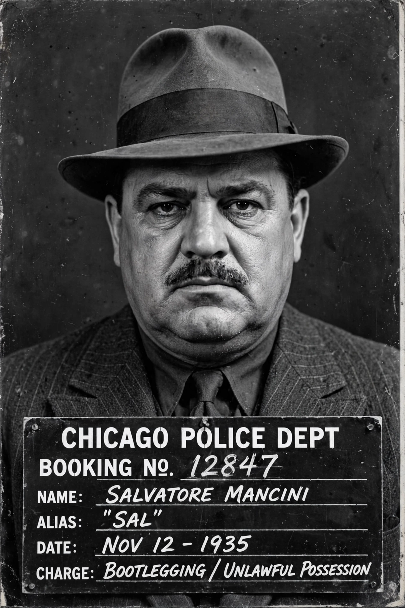

Al Capone
| Born | Alphonse Gabriel Capone, 17 January 1899, Brooklyn, New York, U.S. |
|---|---|
| Died | 25 January 1947 (aged 48), Palm Island, Florida, U.S. |
| Other names | Scarface |
| Occupation | Crime boss, bootlegger |
| Criminal penalty | 11 years in federal prison |
Alphonse Gabriel Capone (17 January 1899 – 25 January 1947), sometimes known by the nickname Scarface, was an American gangster and businessman who attained notoriety during the Prohibition era as the co-founder and boss of the Chicago Outfit, a crime syndicate based in Chicago.

[Image: Al Capone's 1931 mugshot — a heavy-set man in a suit and fedora]Early life
Capone was born in Brooklyn, New York, to Italian immigrant parents from Naples. He left school as a teenager and fell in with street gangs before working for the New York crime figure Frankie Yale and then moving to Chicago, where he worked for Johnny Torrio.
Chicago and Prohibition
When Torrio retired in the mid-1920s after an assassination attempt, Capone took control of an organisation that made large profits from illegal brewing and distribution of alcohol, gambling and prostitution, protected by bribery of officials and enforced by violence against rivals. His reign coincided with notorious episodes such as the Saint Valentine's Day Massacre of 1929, in which seven members or associates of a rival gang were murdered — a crime widely attributed to Capone's organisation, though he was never charged with it.
Conviction and imprisonment
Federal authorities, unable to secure a Prohibition or murder conviction, prosecuted Capone for income tax evasion. On 17 October 1931 he was convicted, and he was sentenced to 11 years in federal prison, serving time including at the newly opened Alcatraz.
Death
Capone's health deteriorated in prison from neurosyphilis. Released in 1939 because of his condition, he lived in Florida and died of cardiac arrest following a stroke and pneumonia in January 1947.
In popular culture
Capone has become one of the most famous figures of American organised crime, portrayed in numerous films, television series and books about the Prohibition era.
See also: Organized crime · Eliot Ness